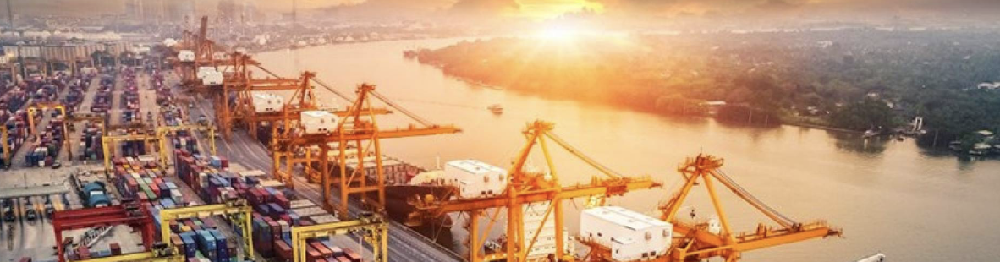

해운/물류/ 해양
연구지원
양현재단은 바다와 같이 넣고 어진 마음으로 이웃과 더불어 산다라는 뜻을 바탕으로 지도층의 사회적 책임
과 부의 환원이라는 조수호 한진해운 회장의 철학과 의지에 따라 고인의 사재 출연하여 설립되었습니다.
드넓은 바다에 무한한 가능성이 있습니다.
양현재단은 우리나라 해운, 물류, 해양에 관한 학술 연구의 활발한 활동을 위하여 관련 연구 기관 및 학술 단체를 지원합니다.
지원 대상
해운, 물류, 해양과 관련된 연구를 하는 학술 연구기관 또는 단체로 지원이 필요한 상황임이 인정되거나 해양수산부의 추천을 받은 기관
연구지원 안내
-
1연구기획 및 운영계획서 검토
-
2지원 대상 기관 선정
-
3지원 방법 및 규모 결정
-
4연구 지원
주요 연구 실적
- 선박금융 전략수립
- 기후 변화에 따른 북극해 변화와 대응 방안
- 국적선사의 친항만관리 정책에 대한 영향과 대응전략
- 선·화주 상생협력 수익모델 분석 및 협력체계 구축